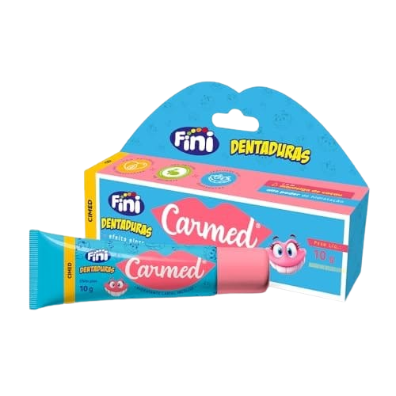
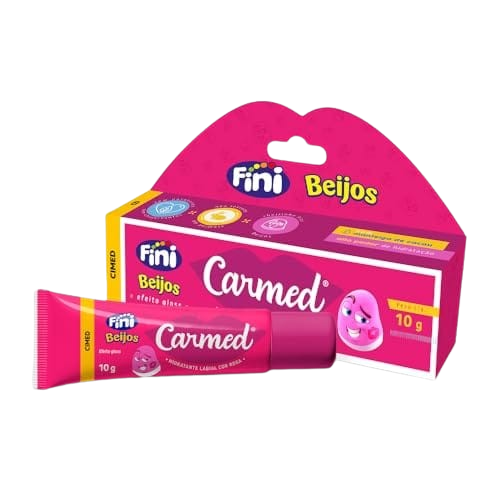
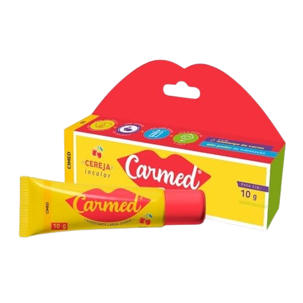

Custo-Benefício: Carmed Fini Dentadura Hidratante Labial 10g
Um dos hidratantes labiais que mais se destacou na análise foi o Carmed Fini Dentadura Hidratante Labial. Com 10g de produto, ele oferece hidratação prolongada para os lábios. O custo-benefício desse hidratante é excelente, pois ele possui um preço acessível e rende bastante. A embalagem é prática e permite uma aplicação precisa do produto. Além disso, ele possui um leve aroma de tutti-frutti, que deixa os lábios perfumados e com sabor agradável. É uma ótima opção para quem quer investir em um hidratante labial de qualidade sem gastar muito.
Melhor Opção Barata: Carmed Fini Beijos Hidratante Labial com Cor 10g
Para quem busca uma opção de hidratante labial com cor e com preço baixo, o Carmed Fini Beijos é uma ótima pedida. Com 10g de produto, ele hidrata os lábios e ainda dá um toque de cor. A fórmula desse hidratante é enriquecida com óleo de rícino, que é conhecido por suas propriedades hidratantes e fortificantes para os lábios. Ele está disponível em várias opções de cores, desde os tons mais naturais até os mais vibrantes. É uma excelente alternativa para quem quer um hidratante labial 2 em 1, que hidrata e dá cor aos lábios.
O Grande Vencedor: Cimed
Carmed Hidratante Labial Cereja 10g
Depois de alguns testes e analisar vários hidratantes labiais da linha Carmed Fini, o grande vencedor foi o Cimed Carmed Hidratante Labial Cereja. Com uma fórmula poderosa, ele hidrata intensamente os lábios por muitas horas. O aroma de cereja é delicioso e deixa um gostinho suave nos lábios. A textura é leve e sedosa, proporcionando uma aplicação suave e confortável. Esse hidratante labial também pode ser usado como base para o batom, pois evita que os lábios fiquem ressecados ao longo do dia. É um verdadeiro curinga na necessaire!
Benefícios da Hidratação Labial Carmed
Um dos principais benefícios dos hidratantes labiais Carmed é a hidratação intensa que eles proporcionam. Com ativos hidratantes em sua composição, esses produtos ajudam a prevenir o ressecamento e o aparecimento de rachaduras nos lábios. Outro ponto positivo é que eles formam uma barreira protetora nos lábios, evitando a perda de hidratação ao longo do dia. Isso é especialmente importante para quem mora em regiões de clima seco ou passa muito tempo em ambientes com ar-condicionado. Além de hidratar, os hidratantes labiais Carmed deixam os lábios com uma aparência saudável e bonita.